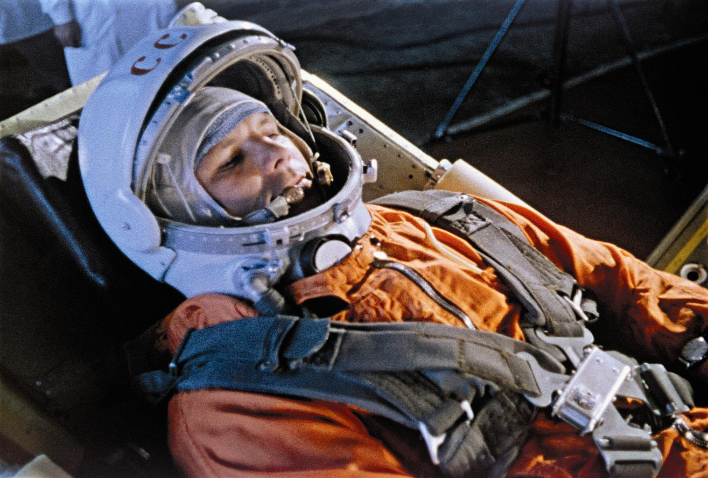
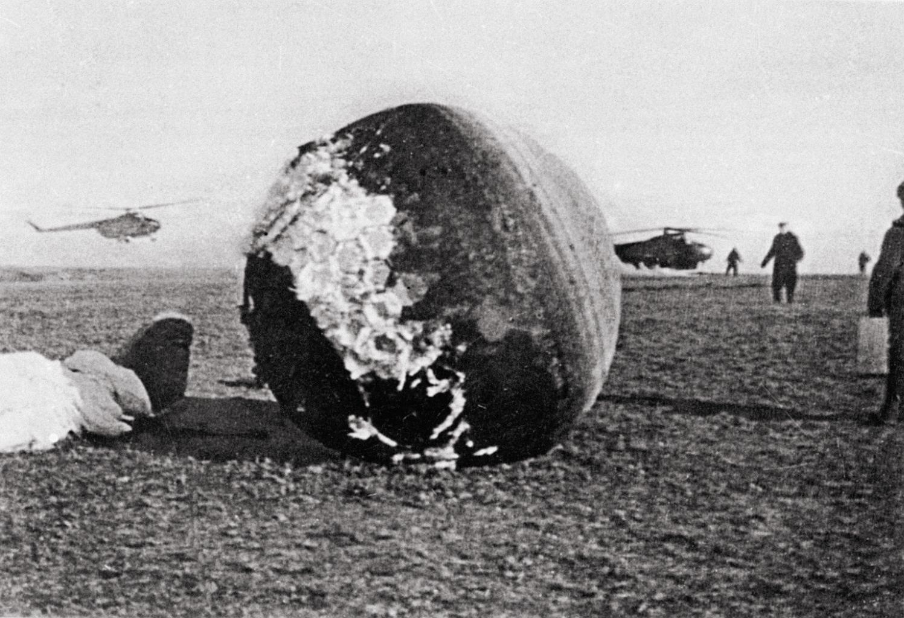
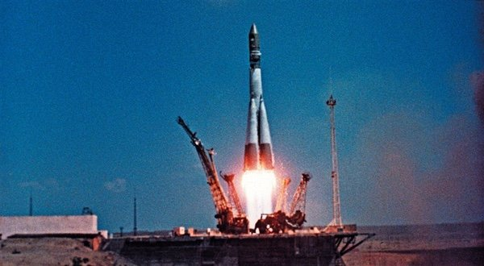

Pierwszy lot człowieka w kosmos był jednym z najważniejszych wydarzeń w historii ludzkości. Dokonał tego radziecki kosmonauta Jurij Gagarin 12 kwietnia 1961 roku, podczas misji statku kosmicznego Wostok 1.
Tło historyczne:
W latach 50. i 60. XX wieku trwała zacięta rywalizacja między Stanami Zjednoczonymi a Związkiem Radzieckim w ramach tzw. wyścigu kosmicznego. Celem obu mocarstw było zdobycie przewagi w badaniach kosmicznych, a wysłanie człowieka w kosmos było jednym z kluczowych etapów tej rywalizacji. Związek Radziecki, po sukcesie z wystrzeleniem pierwszego sztucznego satelity Ziemi Sputnik w 1957 roku kontynuował swoją przewagę, planując wysłanie pierwszego człowieka w przestrzeń kosmiczną.
Misja Wostok 1:

- Jurij Gagarin, mający 27 lat, został wybrany spośród grupy radzieckich pilotów do tej misji. Jego uśmiech, charyzma i skromność uczyniły go idealnym kandydatem na twarz radzieckiego programu kosmicznego.

- Statek Wostok 1 został wystrzelony z kosmodromu Bajkonur w Kazachstanie.
- Lot trwał zaledwie 108 minut, a jego trasa obejmowała jedno okrążenie Ziemi.
- W trakcie lotu Gagarin znajdował się na wysokości ok. 315 km nad Ziemią, a maksymalna prędkość wynosiła 27 400 km/h.
Przebieg misji:
- Po starcie i osiągnięciu przestrzeni kosmicznej, Gagarin wypowiedział swoje słynne słowa: „Pojechali!”, co w wolnym tłumaczeniu oznacza „Lecimy!”

- W trakcie lotu statek kosmiczny Wostok 1 poruszał się po orbicie Ziemi, a Gagarin miał ograniczoną możliwość sterowania cała misja była w dużej mierze zautomatyzowana.
- Jurij Gagarin został pierwszym człowiekiem, który doświadczył nieważkości, co opisał jako niesamowite, ale też wymagające przystosowania.
- Po zakończeniu okrążenia Ziemi, Wostok 1 rozpoczął procedurę powrotu do atmosfery. Gagarin katapultował się z kapsuły na wysokości około 7 km i bezpiecznie wylądował przy pomocy spadochronu.
|